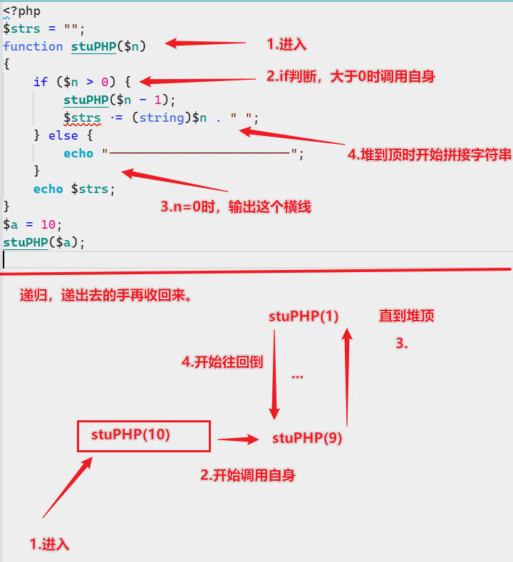

PHP学习日志-003
函数，数组
函数
自定义函数
// 定义函数 |
变量范围
局部变量 ：函数内定义，作用域仅限于函数内。
全局变量 ：函数外部定义，作用域在定义开始至程序文件尾。
静态变量 ：static定义的内部变量，仅第一次调用时初始化,第二次调用时不会初始化(也就是值和上次调用结束时相同)
可变函数
函数名字带上引号，赋值给变量即可。
function stuPHP(){ |
递归函数
自己调用自己。

|
如果不解，可以看看Java那篇日志的递归，原理是共通的。
内置函数
php提供我们现成的函数或结构。有些函数需要开启扩展模块才能使用。
数组
数组的分类
索引数组是按照数字索引来存储数据的数组
关联数组是按照字符串索引来存储数据的数组
多维数组是按照多个索引来存储数据的数组
数组创建
不用指定大小，不用声明，可以存储任何类型数据。
说明：组成如下，值1可以是任何类型，也可以是数组。 |
数组遍历
// 遍历方法1 |
预定义超全局数组变量
全部作用域都可以使用。
1)$GLOBALS
2)$_SERVER服务器变量，不同的web服务器可能会有不同的一些内容
3)$_GET
获取HTTP GET方式传递的参数,比如ur1或者表单GET方式传过来的参数
4)$_POST
获取HTTP POST方式传递的参数,比如表单POST方式传过来的参数
5)$_FILES
HTTP文件上传变量
6)$_COOKIE
7)$_SESSION
8)$_REQUEST
包含了$_GET,$_POST和$_COOKIE中的全部内容
9)$_ENV
环境变量和PHP所运行的环境有关若没有数据可能与php.ini配置项variables order配置项有关
传递数据的方式(重要)
提交数据，给服务端主要的两种形式。
1.get方式
比如：
http://www.xxx.com/index.php?参数名1=参数值1&参数名2=参数值2
接收端接收数据时，使用$_GET("name")获取数据
注意，这是明文传输的，保密性较低
2.post方式
传输的使用form使用post传输，无法在url框框看到。
注意，这个传输保密比get高，稍微安全些。
处理数组的相关函数
- array_count_values(数组名) :将数组的值作为键，并且将它们出现的次数作为值。
- array_key_exists(键名,数组名) :检测键名是否存在于数组中
- array_search(“值”,数组名[,bool]) : 在数组搜索给定的值，存在=>返回索引值(键名) ，不存在=>false(4.4版本前为null).[,bool]部分默认为false，为true时需要匹配不仅仅是值，还有它的类型
- count :返回数组元素个数
- in_array(value,array,type) :判断数组array是否存在指定值value，存在则返回true，反之false。type是类型
- list :前面有提到一嘴，list是用来拆分数组的每个值到每个变量当中的。
- asort :值升序，且键名与值的对应关系不变，与之相对的函数有：arsort
- sort :值升序，且键名与值的对应关系变更为从0到n的整数，与之相对的函数有：rsort
- array_filter（array，callback） :过滤数组中的元素，只保留满足指定条件的元素
- shuffle(数组名) :值顺序打乱，键名重置为0开始的整数
- array_reverse(数组名[,key]) : key=>false(默认)数组倒过来排序；key=>true数组保留原键名并且倒过来排序。
本博客所有文章除特别声明外，均采用 CC BY-NC-SA 4.0 许可协议。转载请注明来自 矢幽武博客！
 wechat
wechat alipay
alipay
相关推荐


评论
公告
威 武 不 屈 ,成 为 自 己 不败的 信条, 剑 走 偏 锋 ,缥 缈 孤 鸿 影 --孤志

微信号：无
QQ：无
--------------------------------每日更新指南：
刷题/记录总知识一般会沿用上次的文档
学习新知将新开文档